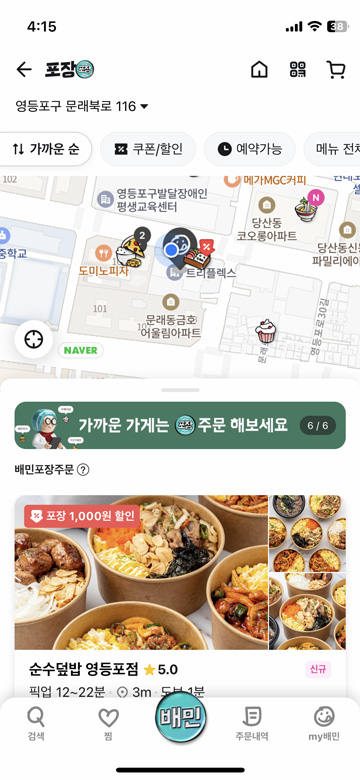

쉬운 배달앱 사용법
준비하기
이용하기
활용하기
고대비
+크게
100
-작게
돋보기
고대비
+크게
100
-작게
음식을 포장해서 먹고 싶어!
포장
포장은 주문한 음식을 직접 가지러 가는 것입니다.
집 근처 포장할 수 있는 가게를 찾을 수 있습니다.
이럴 때 사용해봐요!
집 근처의 포장할 수 있는 가게가 궁금할 때
외출했다가 돌아오는 길에 음식을 포장하고 싶을 때
포장 이렇게 사용해보세요!
1
배달의민족 첫 화면에서 포장을 누른다.

2
지도가 나오고, 포장할 수 있는 가까운 가게가 음식 모양으로 표시된다.
3
음식 모양을 누르면 가게 정보가 나온다.
4
지도에서 가게를 더 찾아 볼 수 있다. 마음에 드는 곳을 선택해서 주문한다.